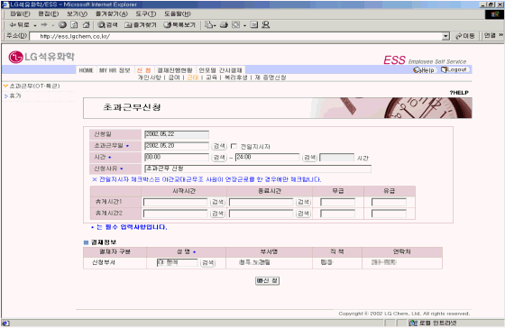

| Ⅱ. 화면사용법 및 유의사항 |
| <그림 1. 초과근무 신청 화면> |
|  |
| |
| 1) 초과근무(휴일근로 등) Data는 초과근무일의 시작시간과 종료시간을 입력한다. |
| -> 초과근무시간은 자동계산됨 |
| 2) 4.21(日)에 휴일근로를 한 경우 시간란에 09:00~18:00로 입력하면 초과근무시간이 9시간이 되므로 |
| 휴게시간란에 12:00~13:00 입력 후, 무급란에 1시간을 반드시 입력해야함. |
| 3) 초과근무 신청에 대한 수정 및 삭제는 차상위 결재자(신청부서 부서장)의 결재가 이루어지기 전까지만 |
| 가능하다. |
| |
|